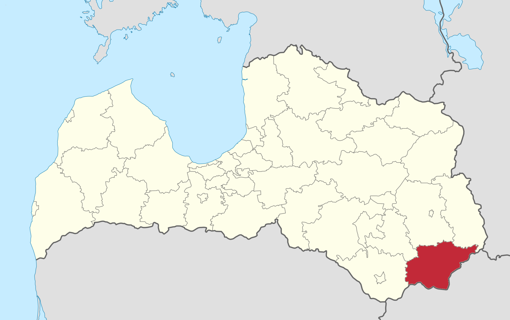
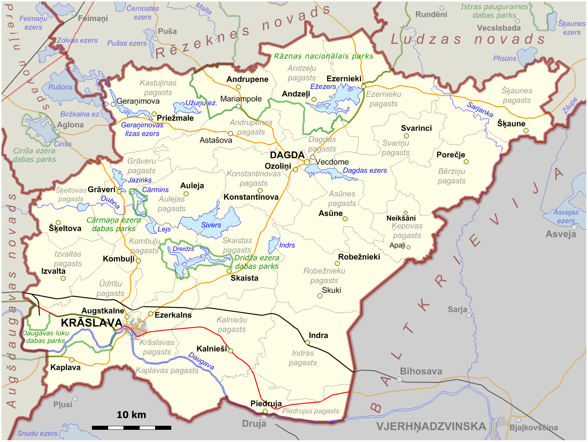

Krāslavas novads
Saturs
Vispārīga informācija
Krāslavas novads ir Latvijas 2021. gada administratīvi teritoriālās reformas gaitā 2021. gada 1. jūlijā izveidota Latvijas pašvaldība, kurā tika apvienoti Krāslavas novads un Dagdas novads, kā arī trīs Aglonas novada pagasti. Robežojas rietumos ar Augšdaugavas novadu, ziemeļos ar Preiļu, Rēzeknes un Ludzas novadiem, kā arī austrumos un dienvidos ar Baltkrievijas Vitebskas apgabalu. Novada centrs atrodas Krāslavas pilsētā.
Novada teritorija pilnībā pārklājas ar pirms iepriekšējās administratīvi teritoriālās reformas pastāvējušā Krāslavas rajona teritoriju.
Teritoriālais iedalījums
Krāslavas novads iedalās 24 pagastos un 2 pilsētās:
- Andrupenes pagasts
- Andzeļu pagasts
- Asūnes pagasts
- Aulejas pagasts
- Bērziņu pagasts
- Dagdas pagasts
- Dagdas pilsēta
- Ezernieku pagasts
- Grāveru pagasts
- Indras pagasts
- Izvaltas pagasts
- Kalniešu pagasts
- vēl citi 14 pagasti
Krāslavas novada administratīvais iedalījums
Lielākās apdzīvotās vietas
| N# | Nosaukums | Statuss | Pagasts | Iedzīvotāji |
|---|---|---|---|---|
| 1. | Krāslava | Pilsēta | - | 8041 |
| 2. | Dagda | Pilsēta | - | 1945 |
| 3. | Indra | Ciems | Indras | 517 |
| 4. | Augstkalne | Ciems | Ūdrīšu | 410 |
| 5. | Ezernieki | Ciems | Ezernieku | 367 |
| 6. | Andrupene | Ciems | Andrupenes | 276 |
Krāslavas novada vēsture
Novada teritorija apdzīvota pirms 3. gadu tūkstoša p.m.ē. Neolītā 2. gadu tūkstotī p.m.ē tajā dzīvoja baltu ciltis.
Ap 12. gadsimtu novads bija iekļauts latgaļu Jersikas valstī, cauri tam gāja svarīgais Daugavas ūdensceļš. 13. gadsimtā teritorija tika iekļauta Livonijas Daugavpils komturejā. Pēc Livonijas sabrukuma 1560. gados nonāca Pārdaugavas hercogistē, vēlāk tiešā Polijas pārvaldē.
1772. gadā Polijas sadalīšanas dēļ novada teritorija pārgāja Krievijas Impērijas kontrolē un tika iekļauta vispirms Pleskavas guberņā, tad 1778. gadā Polockas vietniecībā, no 1796. gada Baltkrievijas guberņā un no 1802. gada Vitebskas guberņā.
Metodiskais līdzeklis. Teksts adoptēts no Wikipēdijas